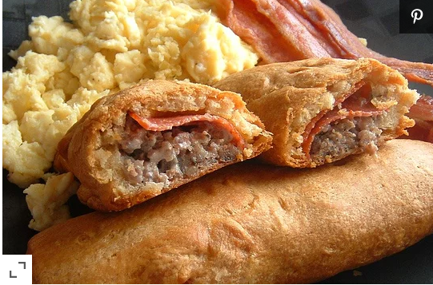

Sausage Crescent Rolls

Description
Spicy seasoned sausage mixed with cream cheese and wrapped in crescent rolls. For a different variation, add
thin slices of pepperoni on the bottom of crescent roll before the sausage mixture and shred cheddar on top
ofsausage; roll pastry over.
Ingredients
- 1 Pound Fresh
- Ground spicy pork sausage
- 1 Packed cream cheese
- 2 Packages refrigerated crescent rolls
- 1 egh white
- 1 Tablespoon poppy seeds
Steps
-
Preheat oven to 350 degrees F (175 degrees C).
-
In a medium skillet, lightly brown sausage and drain. While sausage is still hot, add cream cheese and stir
until cheese is melted and mixture is creamy. Cool completely.
-
Separate crescent rolls and arrange into two rectangles. Form log of sausage mixture lengthwise down
center of each rectangle. Fold over the long sides of pastry to cover sausage log. Place on ungreased
cookie sheet, seam down. Brush with egg white and sprinkle with poppy seeds.
-
Bake 20 minutes until crust is golden. When completely cooled, slice into one and one-half inch slices.